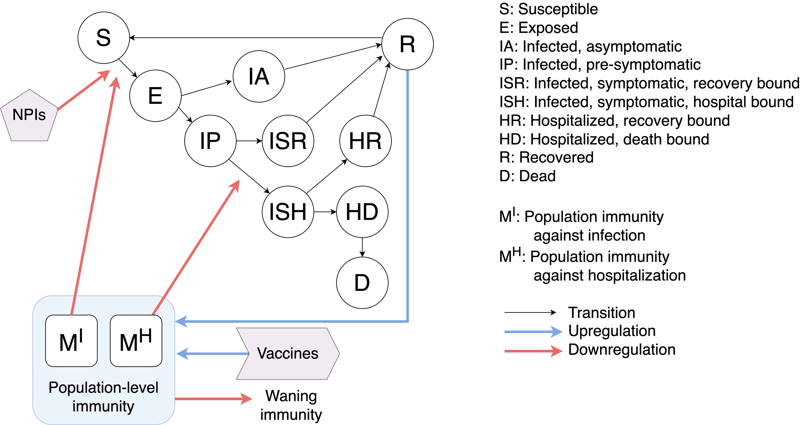

MetroFluSim Mathematical Formulation
The mathematical framework is inspired by the immunoSEIRS model of the Meyers Lab (see Bi and Bandekar et al. 2023, Bi et al. 2022 and Bouchnita et al. 2021 for some related recent publications).
Please note that the MetroFluSim model requires extensive notation -- please review the entirety of each section for provided definitions.
Flu model: diagram

Flu model: deterministic differential equations
We start off with common indices and arguments: - \(t \in \mathbb N\): current simulation day - \(\ell\): location, i.e. subpopulation, \(\mathcal L\): set of all locations/subpopulations - \(a\): age group, \(\agegroups\): set of all age groups - \(r\): risk group, \(\riskgroups\): set of all risk groups - \(i\): type of immunity-inducing event, \(\mathcal{I} := \left\{\text{infection}, \text{vaccine}\right\}\): the set of all types of immunity-inducing events: infection and vaccination, respectively.
Population-level immunity
For each \(\ell \in \mathcal L\), \(a \in \agegroups\), \(r \in \riskgroups\):
where
- \(\rateRtoS\): rate at which recovered individuals become susceptible, so that \(1/\rateRtoS\) is the average number of days a person is totally immune from reinfection until being susceptible again.
- \(V\locationell\agerisktime\): number of vaccine doses administered at time \(t\) to individuals residing in location \(\ell \in \mathcal L\) in age-risk group \(a\), \(r\).
- \(o\), \(o_v\): positive constants modeling the saturation of antibody production in individuals who have infection-induced immunity and vaccination-induced immunity, respectively.
- \(\delta\): number of days after dose for vaccine to become effective.
- \(w\): rate at which infection-induced immunity wanes.
- \(w_V\): rate at which vaccine-induced immunity wanes.
Compartment equations
Note that the following are all \(\numagegroups \times \numriskgroups \times \lvert \mathcal I \rvert\) matrices:
- \(\boldsymbol{K}^I = [\boldsymbol{K}^I, \boldsymbol{K}^I_{V}]\): reduction in infection risk from given immunity-inducing event.
- \(\boldsymbol{K}^{H} = [\boldsymbol{K}^H, \boldsymbol{K}^H_{V}]\): reduction in hospitalization risk from given immunity-inducing event.
- \(\boldsymbol{K}^D = [\boldsymbol{K}^D, \boldsymbol{K}^D_{V}]\): reduction in death risk from given immunity-inducing event.
- \(\boldsymbol{M}\locationell = \boldsymbol{M}\locationell(t) = [\boldsymbol{M}\locationell(t), \boldsymbol{M}\locationell_{V}(t)]\): location \(\ell \in \mathcal L\) population-level immunity.
To simplify notation, we have the following terms that characterize the effect of population-level immunities for a given subpopulation \(\ell\), age \(a\), and risk \(r\):
where \(\boldsymbol{1}_{\lvert \mathcal L \rvert \times 1}\) is an \(\lvert \mathcal L \rvert \times 1\) vector of \(1\)'s and the fraction notation indicates element-wise division.
For each \(\ell \in \mathcal L\), \(a \in \agegroups\), \(r \in \riskgroups\), we have the following equations that characterize transitions between compartments:
where
- The \(\lambda\)-terms are location/subpopulation mixing terms that we define in the next section on the travel model.
- \(\boldsymbol{N}\locationell\): \(\numagegroups \times \numriskgroups\) matrix corresponding to total population in location \(\ell \in \mathcal L\), where element \(N\locagerisk\) is the total population of age group \(a\) and risk group \(\ell\) in location \(\ell\).
- \(\beta\locationell(t) = \beta\locationell_0 (1 + q(t))\): time-dependent transmission rate per day for individuals residing in location \(\ell \in \mathcal L\).
- \(q(t) = \xi \cdot \exp^{-180 * h(t)}\): humidity adjustment, where \(\xi\) is the humidity impact factor and \(h(t)\) is absolute humidity. This formula is taken from this paper.
- \(\propIA\): proportion exposed who are completely asymptomatic when infectious.
- \(r_{IP}\), \(r_{IA}\): relative infectiousness (compared to infected symptomatic people) of infected presymptomatic and infected asymptomatic people respectively.
- \(\rateIStoR, \rateHtoR, \rateIAtoR\): recovery rates for infected symptomatic (\(IS\)), hospital (\(H\)), and infected asymptomatic (\(IA\)) compartments respectively, so that \(1/\gamma\) is the average number of days it takes for an infected person not in the hospital to recover, and \(1/\rateHtoR\) is analogous, but for an infected person in the hospital.
- \(\rateEtoI\): infection rate (both exposed to infected presymptomatic transition rate and exposed to infected asymptomatic transition rate), so that \(1/\rateEtoI\) is the average number of days after exposure before a person becomes infectious.
- \(\rateIPtoIS\): infected presymptomatic to infected symptomatic transition rate, so that \(1/\rateIPtoIS\) is the average number of days that an infected person is presymptomatic before becoming symptomatic.
- \(\rateIStoH\): hospitalization rate (infected to hospital transition rate), so that \(1/\rateIStoH\) is the average number of days a person is infected before going to the hospital.
- \(\rateHtoD\): death rate from hospital, so that \(1/\rateHtoD\) is the average number of days a person spends in the hospital before dying.
- \(\boldsymbol{\adjustedpropH}\), where \(\adjustedpropH_{a, r} = \frac{\propH_{a, r}\rateIStoR}{\rateIStoH - \propH_{a, r}(\rateIStoH-\rateIStoR)}\): adjusted proportion hospitalized based on age-risk group \(a, r\) group actually used in model -- this adjustment is necessary to ensure actual proportion hospitalized recapitulates \([\propH_{a, r}]\).
- \(\boldsymbol{\propH}\): \(\numagegroups \times \numriskgroups\) proportion hospitalized based on age-risk group \(a, r\).
- \(\boldsymbol{\adjustedpropD}\), where \(\adjustedpropD_{a, r} = \frac{\propD_{a, r} \rateHtoR}{\rateHtoD - \propD_{a, r} (\rateHtoD-\rateHtoR)}\): adjusted in-hospital mortality rate (as in, proportion who die in the hospital based on age group) actually used in model -- this adjustment is necessary to ensure actual proportion who die in the hospital recapitulates \([\propD_{a, r} ]\).
- \(\boldsymbol{\propD}\): \(\numagegroups \times \numriskgroups\) in-hospital mortality rate (proportion who die based on age-risk group \(a, r\)).
Flu model: travel model
Exposure intensity
For each \(\ell \in \mathcal L\), \(k \in \mathcal L \setminus \{\ell\}\), \(a \in \agegroups\), we have
This can loosely can be interpreted as exposure intensity: the (weighted) proportion of the population that interacts with \(\ell,a\) individuals that are infectious.
The decompositions model the following phenomenon:
- \(\lambda^{(\ell), \text{local}}\agetime\): rate at which individuals in location \(\ell\) get exposed to infected people who live in location \(\ell\) (this contact occurs in location \(\ell\)).
- \(\lambda^{(\ell), \text{visitors from } k}\agetime\): rate at which individuals in location \(\ell\) get exposed to infected people who live in location \(k\) but travel to location \(\ell\) (this contact occurs in location \(\ell\)).
- \(\lambda^{(\ell), \text{residents traveling to } k}\agetime\): rate at which individuals in location \(\ell\) get exposed to infected people who live in location \(k\), due to individuals who live in location \(\ell\) traveling to location \(k\) (this contact occurs in location \(k\)).
Note that we assume this exposure intensity is the same for a given age group regardless of risk group, so we do not have the \(r\)-subscript here.
Specifically, we have
where
and where
is the effective population in location \(\ell \in \mathcal L\) and age-risk group \(a \in \agegroups\), \(r \in \riskgroups\) at time \(t\).
Contact matrix
The contact matrix is defined as
- \(\phi_{a, a^\prime}\locationell(t)\): the number of contacts that individuals in age group \(a \in \agegroups\) residing in location \(\ell \in \mathcal L\) have with other individuals (regardless of location) in age group \(a^\prime \in \agegroups\) on day \(t\).
Let \(\phi^{(\ell), \text{total}}\), \(\phi^{(\ell), \text{work}}\), and \(\phi^{(\ell), \text{school}}\) represent the total contact matrix, school contact matrix, and work contact matrix, respectively for subpopulation \(\ell\).
Then the contact matrix for the subpopulation at time \(t\) is $$ \phi^{(\ell)}(t) := \phi^{(\ell), \text{total}} - (1 - d_{\text{work}}(t)) \phi^{(\ell), \text{work}} - (1 - d_{\text{school}}(t)) \phi^{(\ell), \text{school}} $$ where \(d_{\text{work}}(t)\) is \(1\) if the real-world date corresponding to simulation time \(t\) is a work day and \(0\) otherwise, and \(d_{\text{school}}(t)\) is defined analogously, but for school days.
Other travel parameters
We have
- \(\psi_a \in [0, 1]\): relative susceptibility of individuals in age group \(a \in \agegroups\).
- \(m_a(t)\): a positive scalar modifying travel intensity depending on age \(a\) and day \(t\).
- \(\propdaytravelktoell\): (on average) proportion of the day that a resident of \(k\) spends traveling to location \(\ell \in \mathcal L\).
Note that the arrows in \(\propdaytravelktoell\) correspond to direction of travel (e.g. \(k \rightarrow \ell\) represents residents of location \(k\) traveling to location \(\ell\)). The \(\propdaytravelktoell\) values are calculated from mobility data, corresponding to
where
- \(c^{\poiell}\): average proportion of a day spent at \(\poiell\).
- \(v^{k \rightarrow \poiell}\): average number of visits per day per resident of \(k\) to \(\poiell\).
Flu model: discretized stochastic implementation
To actually implement/simulate this compartmental model, we discretize the deterministic differential equations and treat transitions between compartments as stochastic to model uncertainty. We extend the notation from the deterministic differential equations to capture the stochastic elements.
Let \(\boldsymbol{\mathcal X}(t) = \left\{\boldsymbol{S}(t), \boldsymbol{E}(t), \boldsymbol{IA}(t), \boldsymbol{IP}(t), \boldsymbol{IS}(t), \boldsymbol{H}(t), \boldsymbol{R}(t), \boldsymbol{D}(t), \boldsymbol{M}(t), \boldsymbol{MV}(t), q(t), \boldsymbol{\phi}(t), V\locationell(t)\right\}\) be the "simulation state" at time \(t\). \(\boldsymbol{\mathcal X}(t)\) is a set of matrices.
Let \(\boldsymbol{\Theta}\) be the set of fixed parameters.
Then given initial state \(\boldsymbol{\mathcal X}_0 = \boldsymbol{\mathcal X}(0)\), we can formulate our discretized stochastic implementation as
where \(f\) is parametrized by \(\boldsymbol{\Theta}\), and depends on the step size of discretization \(\Delta t\) and a sample path \(\omega\). We assume that each sample path \(\omega\) is realized from a random process that does not depend on \(\boldsymbol{\mathcal X}(t)\) or \(\Delta t\) for each \(t\). When we are discussing a single model with a fixed set of parameters \(\boldsymbol{\Theta}\), we drop the \(\boldsymbol{\Theta}\) notation for simplicity.
Now we formulate how we implement discretized stochastic transitions. We assume that \(q(t)\), \(\boldsymbol{\phi}(t)\), and \(V\locationell(t)\) are updated deterministically according to some "schedule."
We model stochastic transitions between compartments using "transition variables." Transition variables correspond to incoming and outgoing flows of epidemiological compartments (see the compartment equations above).
Below we formulate the discretized stochastic transitions. Note that the population-level immunity variables behave as aggregate epidemiological metrics. They are deterministic functions of the simulation state and transitions between compartments.
IMPORTANT NOTE_: all \(y\) and \(y^*\)-variables depend on \(\left(\boldsymbol{\mathcal X}(t), \Delta t, \omega\right)\). For notation simplicity, we define \(\simstate := \left(\boldsymbol{\mathcal X}(t), \Delta t, \omega\right)\) and write \(y\) and \(y^*\)-variables as functions of \(\simstate\).
For each \(\ell \in \mathcal L\), \(a \in \agegroups\), and \(r \in \riskgroups\):
IMPORTANT NOTE: the "\(*\)" superscript indicates that the transition variable has a joint distribution with another transition variable. In general, if a compartment has more than one outgoing transition variable, these transition variables must be modeled jointly.
Consider the two transitions out of the infected symptomatic compartment, for example. Given that a patient is infected and symptomatic, exactly one outcome occurs: they recover (from home) or they go to the hospital. Since one and only one of these outcomes must occur, we must model these two transition variables jointly. Joint distribution derivation details are provided in the next section on transition types.
Each transition variable depends on a "base count" and a "rate" (which both depend on the current state of the system). This decomposition is displayed in the table below. Note that these transitions are for a given location \(\ell \in \mathcal L\).
| Transition | Transition variable | Base count | Rate |
|---|---|---|---|
| \(R\) to \(S\) | \(\tvarloc_{R \rightarrow S, a, r}(\simstate)\) | \(R_{a, r}\locationell(t)\) | \(\rateRtoS\) |
| \(S\) to \(E\) | \(\tvarloc_{S \rightarrow E, a, r}(\simstate)\) | \(S_{a, r}\locationell(t)\) | \(\frac{\beta(t) \totalforceofinfection}{1 + \LambdaIlocagerisktime}\) |
| \(E\) to \(IP\) | \(\jointtvarloc_{E \rightarrow IP, a, r}(\simstate)\) | \(E_{a, r}\locationell(t)\) | \(\rateEtoI (1 - \propIA)\) |
| \(E\) to \(IA\) | \(\jointtvarloc_{E \rightarrow IA, a, r}(\simstate)\) | \(E_{a, r}\locationell(t)\) | \(\rateEtoI \propIA\) |
| \(IP\) to \(IS\) | \(\tvarloc_{IP \rightarrow IS, a, r}(\simstate)\) | \(IP_{a, r}\locationell(t)\) | \(\rateIPtoIS\) |
| \(IS\) to \(R\) | \(\jointtvarloc_{IS \rightarrow R, a, r}(\simstate)\) | \(IS_{a, r}\locationell(t)\) | \(\left(1-\frac{\adjustedpropH_{a,r}}{1 + \LambdaHlocagerisktime}\right)\gamma^{IS\rightarrow R}\) |
| \(IS\) to \(H\) | \(\jointtvarloc_{IS \rightarrow H, a, r}(\simstate)\) | \(IS_{a, r}\locationell(t)\) | \(\frac{\rateIStoH \adjustedpropH_{a,r}}{1 + \LambdaHlocagerisktime}\) |
| \(IA\) to \(R\) | \(\tvarloc_{IA \rightarrow R, a, r}(\simstate)\) | \(IA_{a, r}\locationell(t)\) | \(\rateIAtoR\) |
| \(H\) to \(R\) | \(\jointtvarloc_{H \rightarrow R, a, r}(\simstate)\) | \(H_{a, r}\locationell(t)\) | \(\left(1-\frac{\adjustedpropD_{a,r}}{1 + \LambdaDlocagerisktime}\right)\rateHtoR\) |
| \(H\) to \(D\) | \(\jointtvarloc_{H \rightarrow D, a, r}(\simstate)\) | \(H_{a, r}\locationell(t)\) | \(\frac{\rateHtoD \adjustedpropD_{a,r}}{1 + \LambdaHlocagerisktime}\) |
The base count and rate of a transition variable parameterize the distribution that defines its realization.
See this page for mathematical formulations of marginal and joint stochastic transitions between compartments.
General model: discretized stochastic implementation
We make the important note that the flu model's discretized stochastic implementation can be generalized to models with different structures. More broadly, we let \(\boldsymbol{\mathcal C}(t)\) be a model's set of epidemiological compartments, \(\boldsymbol{\mathcal M}(t)\) its set of aggregate epidemiological metrics, and \(\boldsymbol{S (t)}\) its set of schedule-dependent (time-dependent) deterministic values. Then the above formulation still holds.
In fact, in our code, we model \(\boldsymbol{\mathcal C(t)}\) using an Compartment class, \(\boldsymbol{\mathcal M}(t)\) using an EpiMetric class, and \(\boldsymbol{\mathcal S(t)}\) using a Schedule class. We handle stochastic transitions using TransitionVariable and TransitionVariableGroup classes. These classes form some of the building blocks of the base model code.
Updated 08/15/2025. Documentation written by LP, mathematical notation by LP (advised by Lauren Meyers and Dave Morton, edited by Susan Ptak, Meyers Lab, and Shiyuan Liang), travel model conceptualized by Rémy Pasco and Susan Ptak, immunity formulation by Anass Bouchnita.